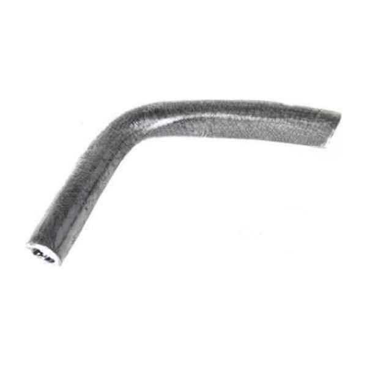

Available
Email for a quote
Toyota 5687-401 Radiator Hose
| OEM part number | 5687-401 |
| Fits | Toyota |
| Models / notes | 5FD35/40/45_ (IN) |
| Category | Cooling |
| Type | Aftermarket replacement |
Send us the quantity you need and we'll reply with pricing, usually within 24 hours. Not the exact part? We can source it. Send the part number or a photo.